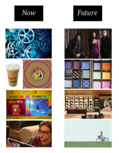
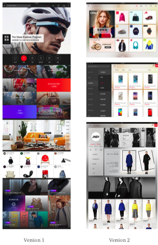

It is an e-commerce iPad application facing 900M users. Under the overall business strategy, the iPad version of an e-commerce shopping application is always easily ignored. However, with the entertainment time changing, more people will use the iPad due when they are on the sofa or in bed. This project is a new version update which means we should bring the new energy and new branding feeling to the consumers. I was an interaction design to conduct this version update. We started from the innovation project to explore our design direction. Then, we did user research to get feedback from our users. After that, we set our design direction and finalize our detail in each shopping scenario.
The project begins with brainstorming with consumers. We want consumers using collage to tell us what their expression on our iPad version now and what their imagination on our new iPad version.
Now:
Disorder - “ There does not exist order in the application. All of the information and functions are clustered. ” Aimless - “It is like a cup of coffee without milk. ” Low Level - “It is like an application designed for the low-salary class. ” Utilization - “It is like a dictionary. You only find stuff and buy stuff. There should be more functions.”
Future:
Order - “Build order from the complex information.” Aimed - “It should be like a special coffee for a specific person. ” High Level - “It should be designed for the middle and upper-class persons.” Emotion Design - “It will be an elegant book with content and design. It will inspire humans to touch it. ”
Then, our designer started our brainstorming to devise design direction, we formed 3 concepts. 1. Recommend what you think: We will push the snacks at night when you feel hungry. We will push the discount products based on user browsing history. We will recommend the clothes based on the user's style preference and body shape. 2. Immersed consumption: We should not make our interface too colorful and disorderly. We should introduce our shopping experience peacefully not noisy. 3. Buy comfortably: We should try to design experience like “ window shopping” at home.
Based on the previous research, we design two concept versions to stimulate our imagination towards future e-commerce shopping experience.
